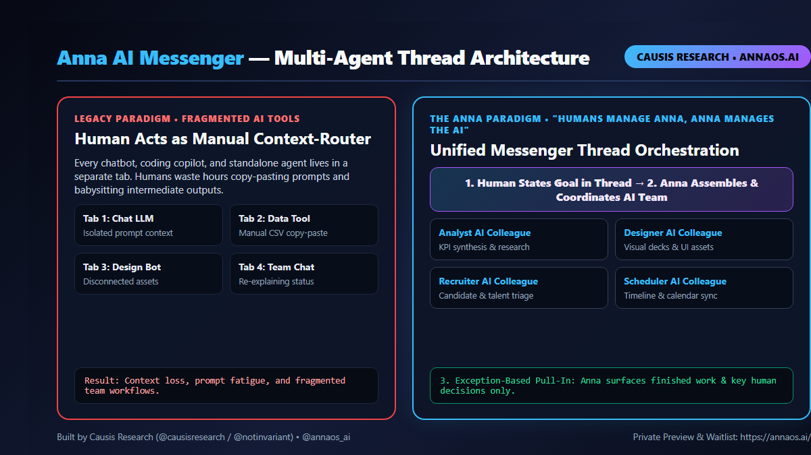

Why today's fragmented chatbot workflow breaks at scale — and how Anna AI Messenger (annaos.ai) by Causis Research (@causisresearch / @notinvariant) turns multi-agent orchestration into a single unified conversation thread.
Direct comparison between legacy fragmented AI prompting (where the human acts as the manual context-router) and Anna's unified thread orchestration.

Direct PNG Asset Link: https://meer9374-a11y.github.io/neonops-web3-suite/anna_architecture.png
Select a real-world mission depicted on annaos.ai to see how Anna coordinates specialized AI colleagues (Scheduler, Recruiter, Analyst, Designer) in parallel and surfaces only decision checkpoints to humans:
Instead of copy-pasting outputs across 5 separate AI tabs, humans speak naturally in one thread while Anna delegates sub-tasks behind the scenes.
Anna dynamically spins up specialized AI roles (Analyst, Designer, Recruiter, Scheduler) that collaborate asynchronously toward the thread's goal.
You aren't spammed with intermediate chain-of-thought noise. Anna pulls humans in only when high-leverage decisions or approvals are needed.
Engineered by Causis Research (@causisresearch / @notinvariant), focusing on continuous learning and multi-agent systems rather than thin chat wrappers.